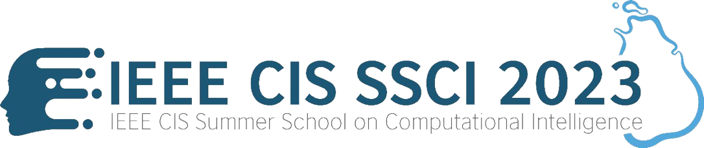

Mr. Samudra Kanankearachchi, the Director of Technology at 99x, is a seasoned professional with a remarkable focus on driving technology excellence. With a strong background in leading offshoring teams and a wealth of expertise in various domains, Samudra brings valuable insights and a proven track record to his role. Throughout his career, Samudra has held diverse positions ranging from solution architect to hardcore coder, showcasing his versatility and deep technical knowledge. With over 18 years of experience in working with high-profile Independent Software Vendors (ISVs) in Norway, he has developed a deep understanding of the unique challenges and requirements of the industry. Mr. Samudra's expertise extends to a wide range of tech stacks relevant to the job, including Microsoft Full Stack, AI Technologies, GPT, and OpenAI. His high-level proficiency in these areas allows him to provide strategic guidance, drive innovation, and deliver exceptional solutions. With a keen interest in GPT and AI technologies, Samudra is at the forefront of driving adoption and integration within organizations. He possesses strong skills in AI technologies, particularly in developing LLM integration and architecting GPT-based solutions, enabling companies to harness the power of AI and drive innovation. As the Director of Technology at 99x, Mr. Samudra is committed to leveraging his expertise, leadership skills, and passion for technology to guide the team towards excellence. With his strategic vision and deep technical insights, he plays a pivotal role in shaping the technological landscape and driving growth for the organization. In summary, Mr. Samudra Kananke Arachchi, as the Director of Technology at 99x, brings a wealth of experience, technical expertise, and a proven track record to the table. His dedication to driving technology excellence and his ability to deliver innovative solutions make him an invaluable asset to the organization.